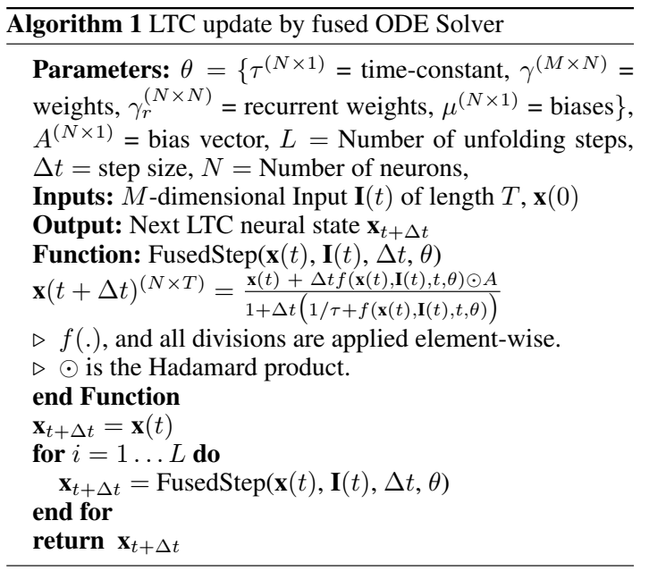
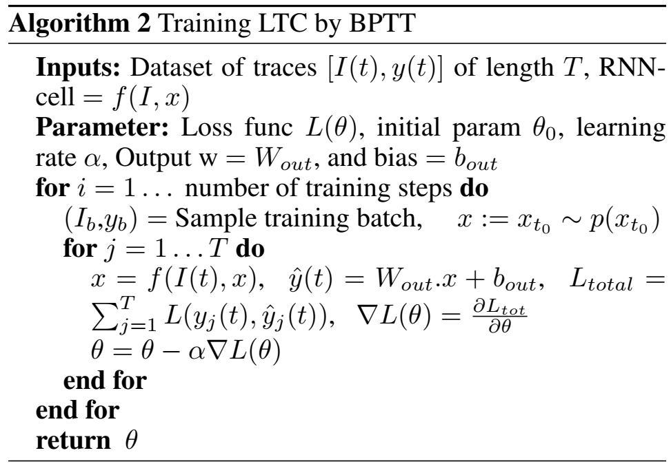
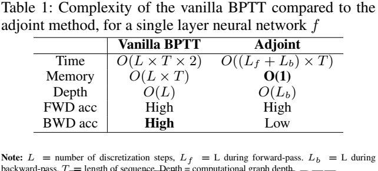
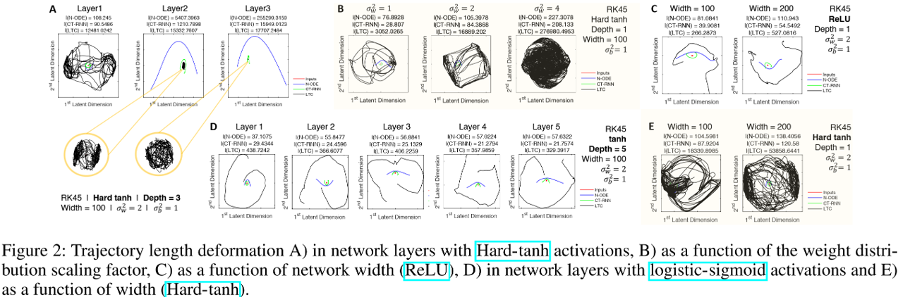
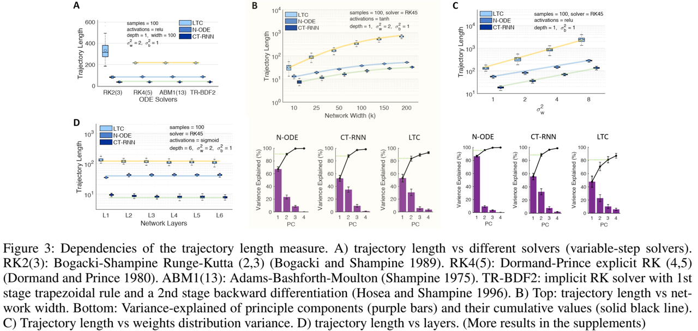
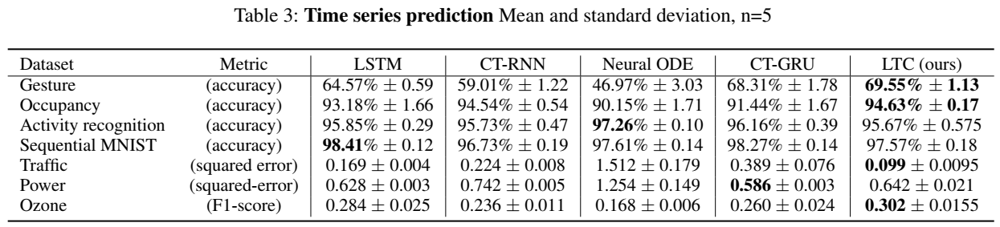
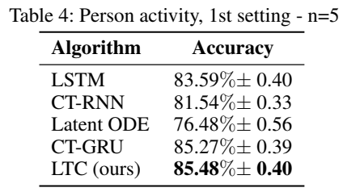
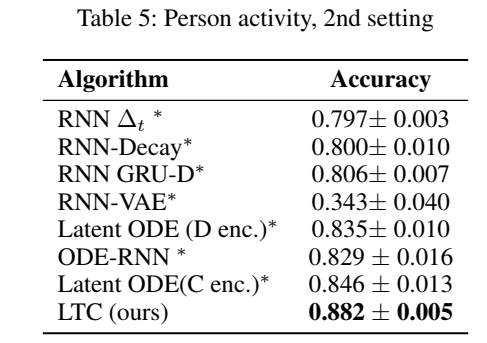
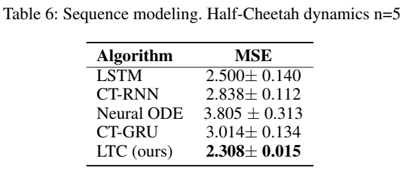
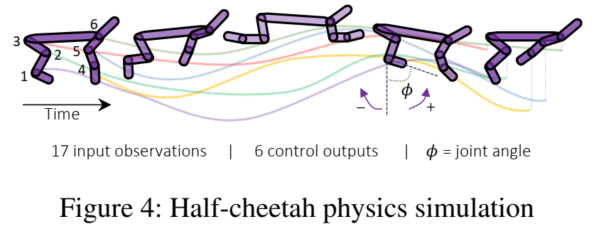

论文阅读十八：液体时间常数网络
摘要
我们介绍一类新的连续时间循环神经网络模型。我们不是通过隐式非线性来声明学习系统的动态，而是构建通过非线性互连门调制的线性一阶动态系统网络。由此产生的模型表示具有与其隐藏状态耦合的变化（即液体）时间常数的动态系统，其输出由数值微分方程求解器计算。这些神经网络展示了稳定和有界的行为，在神经常微分方程族中产生优越的表现力，提高了在时间序列预测任务上的性能。为了证明这些特性，我们首先采用理论方法来寻找它们动态性上的界限，并通过在潜在轨迹空间中测量的轨迹长度计算它们的表达能力。我们然后执行一系列时间序列预测实验来展示液体时间常数网络（LTCs）相较于经典和现代RNNs的近似能力。
引言
具有由常微分方程（ODEs）确定的连续时间隐藏状态的循环神经网络（RNN），是用于建模医药、工业和商业环境中无处不在的时间序列数据的有效算法。神经ODE的状态， ，由此方程的解定义： ，神经网络 由 参数化。然后可以使用一个数值ODE求解器来计算状态，通过执行逆向模式自动微分来训练网络，或者通过求解器进行梯度下降，或者将求解器作为一个黑盒并应用邻接方法（adjoint method, Pontryagin 2018）。未决问题是：神经ODEs在它们当前形势下的表达力如何，我们是否可以改进它们的架构来实现丰富的表示学习和表达？
与其通过神经网络f直接定义隐藏状态的导数，可以确定一个更加稳定的连续时间循环圣经网络（CT-RNN），通过遵循方程（Funahashi && Nakamura 1993）： ，其中, 项利用时间常数 辅助自动化系统达到平衡状态。 x(t) 是隐藏状态，I(t)是输入，t表示时间， 由 参数化。
我们提出替代公式：令神经网络的隐藏状态流，由一个线性ODEs系统声明，其形式为： ， 令 表示为由 确定的非线性，参数为 和A。然后，通过将S带入到隐藏状态方程，得到：
方程1 展示了一个新颖的连续时间RNN实例，具有以下特征和优势：
液体时间常数 神经网络 不仅决定隐藏状态 x(t)的导数，还作为学习系统的输入依赖可变时间常数（ （时间常量是表征ODE速度和耦合敏感度的参数）。这个特性使得隐藏状态的单个元素识别每个时间点道道的输入特征的专用动态系统。我们将这些模型表示为液体时间常量循环神经网络（LTCs）。LTCs可以通过ODE求解器的任意许安则来实现。在章节2中，我们引入一个使用的固定步骤ODE求解器，同时享有隐式Euler的稳定性和显式Euler方法的计算效率。
LTCs的逆向模式自动微分 LTCs实现了可微分计算图。类似于神经ODEs，它们可以通过各种形式的基于梯度的优化算法进行训练。我们决定在后向传递过程中用内存换取数值精度，使用一般的反向传播通时算法来优化 LTC，而不是使用基于邻接的优化方法（Pontryagin，2018 年）。在第 3 节中，我们将详细说明这一选择的动机。
有界动态性-稳定性 章节4中，我们证明LTCs的状态和时间常量界定在有限范围内。该特性确保了输出动态的稳定性，并且在系统输入持续增加时是理想的。
卓越的表现力 章节5中，我们理论性和量化地分析了LTCs的近似能力。我们采用泛函分析方法来证明LTC的普遍性。我们然后深入衡量了它们与其他连续时间模型相比的表现力。我们通过测量在潜在轨迹表示中网络激活函数的轨迹长度来执行。轨迹长度被引入作为前馈深度神经网络表达力的衡量（Raghu等,2017）。我们扩展这些标准到连续时间循环模型族。
时间序列建模 章节6，我们执行一系列11个时间序列预测实验，并比较现代RNNs和连续时间模型。我们观察到在大多数情况改进表现由LTCs取得。
为什么是这种特定的公式？ 选择这种特定的代表有两个主要理由：I）LTC 模型与小型物种的神经动力学计算模型和突触传递机制有着松散的联系（Hasani等，2020 年）。非尖峰神经元电位的动力学 v(t)，可以写为线性ODEs系统的形式（Lapicque,1907;Loch & Segev 1998）： ，其中 S 是从突触前源到细胞的所有突触输入的总和，gl 是泄漏电导。
在稳态下，细胞的所有突触电流都可以通过以下非线性来近似（Koch和Segev 1998；Wicks、Roehrig和Rankin 1996）： ，其中 是取决于所有神经元状态的s型非线性，v(t)是当前细胞的突触前信号，以及细胞的外部输入I(t)。通过带入这两个方程，我们得到一个类似于方程1的方差。LTCs受此的启发。II）方程1可能类似于著名的动态因果模型（DCMs）（Friston、Harrison和Penny 2003），具有双线性动力系统近似（Penny、Ghahramani和Friston 2005）。DCMs是通过动态系统 取二阶近似（双线性）公式化的，结果将是以下形式： ，其中 。 DCM和双线性动态系统已经证明有希望学习捕捉复杂fMRI时间序列信号。LTCs引入作为连续时间（CT）模型的变体，受到生物学的启发，在建模时间序列中展示了强大的表现力、稳定性和性能。
LTCs通过融合ODE求解器进行前向传递
由于LTC语义的非线性，解析求解方程1并非易事。ODEs系统的状态，然而，在任意时间点T，可以通过一个数值ODE求解器计算，该求解器模拟系统从轨迹 x(0) 到 x(T) 的过程。ODE求解器将连续模拟间隔 [0,T] 分解为时间离散化 。因此，求解器步骤仅涉及从 到 的神经状态的更新。
LTC的ODE实现了一个刚性方程组（Press等人，2007）。当使用基于RungeKutta（RK）的积分器进行模拟时，这类ODE需要指数数量的离散步骤。因此，基于RK的ODE求解器，如Dormand-Prince（torchdiffeq中的默认），不适用于LTCs。因此，我们设计一个新的ODE求解器，融合显式和隐式Euler方法（Press等2007）。这种离散化方法的选择导致隐式更新方程的稳定性。为此，融合求解器数值通过下式展开形如 dx/dt = f(x) 的给定动态系统：
特别地，我们仅将f中线性出现的 替换为 。因此，可以用符号求解方程2中 。将融合求解器应用于 LTC 表示，并求解 ，得到：
方程3计算LTC网络的一个更新状态。对应地，算法1说明如何实现LTC网络，给定参数空间 。 假设由一个人任意的激活函数（即，对于tanh非线性， ）。对于长度为T的输入序列，算法的计算复杂度是 O(L T)$ ，其中L数离散步数。直观上，具有N个神经元的密集LTC网络版本，和具有N个cell的密集版本长短期记忆（LSTM）（Hochreiter & Schmidhuber， 1997）网络，应有同样的复杂度。

通过BPTT训练LTC
建议通过应用邻接灵敏度方法执行反向模式自动微分 (Chen等，2018)，以神经网络 中每一层的恒定内存成本来训练神经微分方程。然而，邻接方法，当以逆向模式运行时，具有数值误差。这种现象发生是因为邻接方法遗忘前向时间的计算轨迹，这被社区反复表示（Gholami、Keutzer和Biros 2019；Zhuang等人2020）。
相反，通过时间的直接反向传播（BPTT）在反向模式积分期间以内存换取前向传递的准确恢复（Zhuang等人，2020）。因此，我们着手设计一个一般的BPTT算法，以通过求解器保持高度精确的反向传递积分。为此，给定ODE求解器的输出（神经状态的向量），可以迭代折叠来构建RNN，然后应用算法2所示的学习算法来训练系统。算法2使用一般随机梯度下降（SGD）。可以将其替换为更高性能的SGD变体，如Adam（Kingman & Ba，2014），其在我们实验中使用。

复杂度 表1总结了我们一般BPTT算法相较于邻接方法的复杂度。我们在前向和后向积分轨迹中均取得高准确率，具有类似的计算复杂度，但内存成本较高。

LTCs的 和 状态的边界
LTC由一个根据输入改变其时间常数的ODE表示。因此，重要的是看LTCs是否对无限制到达的输入保持稳定。本节中，我们证明LTC神经元的时间常量和状态界定在有限范围，分别如定理1和定理2所示。
定理 1 设 表示由方程1判定的LTC网络中神经元i的状态，并设神经元i接收M个传入连接。那么，神经网络的时间常量 ，界定在以下范围：
证明在附录中。它是基于神经网络f的有界、单调递增的S形非线性及其在LTC网络动力学中的替代而构建的。正如我们在第5节中更正式地发现的那样，稳定的变化时间常数显著增强了这种形式的时间连续RNN的表现力。
定理 2 设 表示由方程1判定的LTC中神经元i的状态，并设神经元i接收M个传入连接。那么晚，任意神经元i的隐藏状态，在有限范围 上，界定如下：
证明在附录中。它是根据 LTC 方程区间的符号以及通过显式欧拉离散化对 ODE 模型的近似构建的。定理2说明了LTC的一个理想特性，即状态稳定性，它保证了LTC即使输入增长到无穷大，输出也不会爆炸。接下来，我们将讨论与时间连续模型家族（如CT-RNN和神经常微分方程）相比，LTC的表达能力（Chen等人，2018；Rubanova，Chen和Duvenaud，2019）。
LTC的表达能力
了解神经网络的结构特性如何决定它们可以计算哪些函数，这被称为表达性问题。测量神经网络表现力的早期尝试包括基于泛函分析的理论研究。他们表明，具有三层的神经网络可以以任何精度近似任何有限的连续映射集。这被称为万能近似定理。普遍性被扩展到标准RNN（Funahashi 1989），甚至连续时间RNN（Funahashi和Nakamura 1993）。通过仔细考虑，我们还可以证明LTC也是通用近似器。
定理 3 设 ， $ S \subset R^n$ ，以及 为自动ODE，F： 为S上的 映射。设D表示S的紧凑子集，并假设系统模拟界定在区间 I = [0,T]。那么，对于一个正数 ， 存在一个所方程1所述的LTC网络，其具有N个隐藏单元、n个输出单元和输出内部状态 u(t)，使得系统 ，具有初始值 ，以及适当的网络初始化，的任何推出
证明的主要思想是定义一个n维动力系统并将其放入更高维的系统中。第二个系统是一个LTC。LTC的普遍性证明与CT-RNN的普遍性的证明的根本区别（Funahashi和Nakamura 1993）在于两个系统语义的区别，其中LTC网络在其时间常数模块中包含一个非线性输入相关项，这使得部分证明变得不简单。
通用近似定理广泛地探索了神经网络模型的表达能力。然而，该定理并没有为我们提供不同神经网络架构之间分离位置的基本衡量标准。因此，需要更严格的表现力度量来比较模型，特别是那些专门从事时空数据处理的网络，如LTC。在定义静态深度学习模型表现力的度量方面取得的进展（Pascanu、Montufar和Bengio 2013；Montufar等人2014；Eldan和Shamir 2016；Poole等人2016；Raghu等人2017）可能有助于从理论和定量上衡量时间连续模型的表现力，我们将在下一节中对此进行探讨。
通过轨迹长度测量表现力
在给定网络容量（深度、宽度、类型和权重配置）的情况下，表现力的衡量必须考虑学习系统可以计算的复杂程度。静态深度网络的统一表现力度量是（Raghu等人，2017）中引入的轨迹长度。在此背景下，人们评估了深度模型如何逐步将给定的输入轨迹（例如，圆形二维输入）转换为更复杂的模式。
然后，我们可以对获得的网络激活进行主成分分析（PCA）。随后，我们在二维潜在空间中测量输出轨迹的长度，以揭示其相对复杂性（见图1）。轨迹长度定义为给定轨迹 的弧长（例如，二维空间中的圆）（Raghu等人，2017）： 。通过实现轨迹长度的增长的下线，可以在浅层和深层架构之间设置一个障碍，而不管对网络权重配置的任何假设（Raghu等，2017），不同于其他表达力测量（Rascanu等，2013；Montufar等，2014；Serra等2017；Gabrie等，2018；Hanin & Rolnick，2018，2019；Lee等，2019）。
我们着手将静态网络的轨迹空间分析扩展到时间连续（TC）模型，并降低轨迹长度以比较模型的表现力。为此，我们共享 设计神经ODEs、CT-RNNs和LTCs的实例。网路通过权重 和权重 初始化。我们然后使用不同类型的ODE求解器对于任意权重分布执行前向传递模拟，同时将网络暴露于圆形输入轨迹 ， 对于 。通过察看隐藏层激活的前两个主成分（具有超过80%的平均方差解释），我们持续地观察到LTCs更加复杂的轨迹。图2展示了我们实验的观测。所有网络都是通过具有可变步长的Dormand-Prince显式Runge-Kutta求解器实现的。我们有以下发现：I）具有Hard-tanh和ReLUctant激活的神经ODEs和CT-RNNs的轨迹长度指数增长（图2A），不管它们的权重分布，它们潜在空间的性质不变。II）当通过Hard-tanh和ReLUctant设计，LTCs展示了较为缓慢的轨迹长度增长率，在实现高度复杂性的妥协下（图2A、2C和2E）。III）除了通过Hard-tanh和ReLU激活构建的多层连续时间模型外，在所有情况中，我们观测到更长和更复杂的LTC网络的潜在空间行为（图2B到2E）。IV）不同于静态深度网路（图1），我观察到轨迹长度不随着深度增长，在由tanh和sigmoid实现的多层连续时间网络中（图2D）。V）最后我们观察到TC模型中的轨迹长度随模型的激活、权重和偏差分布方差、宽度和深度而变化。我们在图3中更加系统地进行了展示。VI）轨迹长度随着网络宽度线性增长（图3B-注意对数尺度Y轴中曲线的对数增长）。VII）随随着方差的增加，增长速度要快得多（图3C）。VIII）轨迹长度与ODE求解器的选择无关（图3A）。IX）激活函数使TC系统探索的复杂模式多样化，其中ReLU和Hard-tanh网络对LTC表现出更高的复杂性。一个关键原因是每一层细胞之间存在循环链接。计算深度（L）的定义。对于连续时间网络 中的一个隐藏层，L是被求解器对每个输入样本采取的平均积分步数。注意，对于具有n层的f，我们定义总深度为 。这些观测使得我们制定了连续时间网络的轨迹长度增长的下限。


定理 4 神经 ODE 和 CT-RNN 的轨迹长度增长边界。设 ,其中 ， 表示神经ODE； ，其中 表示CT-RNN。 是具有Hard-tanh激活的随机权重。设I(t)为2D输入轨迹，其渐进点（即， ）对于所有的 都有与I(t)垂直的分量，其中L = 求解器步数。然后，通过将前两个主成分隐藏状态分数彼此之间的投影，定义为层d的2D潜在轨迹空间， ，分别用于神经ODE和CT-RNNs,我们得到：
证明在附录中。它按照（Raghu等，2017）中为使用分段线性激活的深度网络实现轨迹长度边界类似的步骤，由于连续时间设置，需要仔细考虑。证明的构造方式是，我们在主成分域中层d+1中的隐藏状态梯度的范数 ，和神经ODEs和CT-RNNs微分分行成的右边的范数期望之间建立递归关系。然后我们回滚递归达到输入。
请注意，为减少问题的复杂度，我们仅界定隐藏状态图像 ||dz/dt_{\orth}^{(d+1)} 的正交分量，因此在定理陈述（Raghu等，2017）中，我们有关于输入I(t)的假设。接下来，我们为LTC网络找到一个下限。
定理 5 LTC轨迹长度的增长率。设方程1决定 \theta = \lbrace W,b,\tau,A\rbarce 的LTC。对 f 和 I(t) 取与定理 4 相同的条件，我们有：
证明在附录中。粗略概述：我们分别构建隐藏状态梯度范数与LTC右侧分量之间的递推关系，逐步建立边界。
理论边界的讨论
I）正如预期的那样，神经ODE的边界与n层静态深度网络的边界非常相似，除了与求解器步数L呈指数依赖关系。II）根据指数的基数，CT-RNN 的边界表明其轨迹长度比神经 ODE 短。这一结果与图2和图3中的实验结果一致。III）图2B和图3C显示了LTC轨迹长度随权重分布方差的快速线性增长。方程9所示的LTC下限证实了这一点。IV）LTC的下限还描述了轨迹长度与宽度k的线性增长，这验证了3B中给出的结果。V）考虑到表2中Hard-tanh激活模型L的计算深度，神经ODE、CT RNN和LTC的计算下限证明了第5节实验中LTC网络的轨迹长度更长。接下来，我们在一组现实生活中的时间序列预测任务中评估LTC的表达能力。
实验评估
时间序列预测
我们评估通过提出的融合ODE求解器实现的LTC和先进离散RNNs、LSTMs、CT-RNNs（ODE-RNNs）、连续时间门控循环单元（CT-GRUs）和（Chen等，2018）中建议的由第四阶Runge-Kutta求解器构造的神经ODEs，在一系列多样化的真实世界监督学习任务上的的表现。结果总结在表3。实验设置在附录中。我们观察到在我们七个实验中的四个里，LTCs相较于其他RNN模型取得5%到70%的性能改进，在余下三个实验中取得可比较的表现。（见表3）。

人员活动数据集
我们在两个不同的框架中使用（Rubanova、Chen 和 Duvenaud 2019）中描述的“人类活动”数据集。该数据集包含6554个人类活动序列（例如躺着、走路、坐着），周期为211毫秒。我们设计了两个实验框架来评估模型的性能。在第一种设置中，基线是之前描述的模型，输入表示不变（详见附录）。LTC的表现优于所有模型，特别是CTRNN和神经ODE，如表4所示。请注意，CT-RNN架构等效于（Rubanova、Chen和Duvenaud 2019）中描述的ODE-RNN，不同之处在于具有状态阻尼因子 。

在第二种设置中，我们仔细地设置了实验，以匹配（Rubanova、Chen和Duvenaud 2019）所做的修改（见补充），以便在LTC和（Rubanoova、Chen和Dutenaud 2019）中讨论的更多样化的RNN变体之间进行公平的比较。与其他型号相比，LTC表现出卓越的性能和较高的效率。结果总结于表5）。

Half-Cheetah运动学建模
我们旨在评估连续时间模型捕捉物理动态的能力。为此，我们收集了 25 个针对 HalfCheetah-v2 gym 环境（Brockman 等人，2016 年）的预训练控制器的部署，这些控制器由 Mu JoCo 物理引擎（Todorov、Erez 和 Tassa，2012 年）生成。然后，任务是以自回归方式拟合观察空间时间序列（图 4）。为了增加难度，我们随机覆盖了 5% 的动作。测试结果列于表 6，并证明了 LTC 的性能优于其他模型。


相关工作
连续时间模型 TC网络变得前所未有的流行。这是由于自适应计算、更好的连续时间序列建模、内存和参数效率等几个优点的体现（Chen等人，2018）。大量替代方法试图改进和稳定伴随方法（Gholami、Keutzer和Biros 2019），在特定背景下使用神经ODE（Rubanova、Chen和Duvenaud 2019；Lechner等人2019），并更好地表征它们（Dupont、Doucet和Teh 2019；Durkan等人2019；Jia和Benson 2019；Hanshu等人2020；Holl、Koltun和Thuerey 2020；Quaglino等人2020）。在这项工作中，我们研究了神经ODE的表达能力，并提出了一种新的ODE模型来提高它们的表达能力和性能。
表现力的度量。大量现代工作试图找到一些问题的答案，例如为什么深层网络和特定架构表现良好，浅层网络和深层网络的近似能力之间的界限在哪里？在此背景下，（Montufar等人，2014）和（Pascanu，Montufar和Bengio， 2013）建议将神经网络的线性区域数量作为表现力的衡量标准，（Eldan和Shamir 2016）表明存在一类较小网络无法产生的径向函数，（Poole等人2016）通过瞬态混沌研究了神经网络的指数表现力。
这些方法令人信服；然而，它们必然会受到给定网络的特定权重配置的约束，以降低与（Serra、Tjandraatmadja和Ramalingam 2017；Gabrie等人2018；Hanin’和Rolnick 20182019；Lee、Alvarez-Melis和Jaakkola 2019）类似的表达能力。（Raghu等人，2017）引入了一个相互关联的概念，通过轨迹长度量化给定静态网络的表现力。我们将它们的表现力分析扩展到时间连续网络，并为轨迹长度的增长提供了较低的资金，宣布了LTC的优越近似能力。
结论、范围和限制
我们研究了一类新的时间连续神经网络模型的使用，该模型由线性ODE神经元和特殊的非线性权重配置组合而成。我们证明，它们可以通过任意变量和固定步长的常微分方程求解器有效地实现，并通过时间反向传播进行训练。与标准和现代深度学习模型相比，我们在监督学习时间序列预测任务中展示了它们的有界和稳定的动态、卓越的表现力和替代性能。
长期依赖。与时间连续模型的许多变体类似，当通过梯度下降训练时，LTC表达了消失的梯度现象（Pascanu、Mikolov和Bengio 2013；Lechner和Hasani 2020）。尽管该模型在各种时间序列预测任务上显示出希望，但它们并不是以当前格式学习长期依赖关系的明显选择。
ODE求解器的选择。时间连续模型的性能在很大程度上取决于其数值实现方法（Hasani 2020）。虽然LTC在使用先进的变步长求解器和这里介绍的融合固定步长求解器时表现良好，但当使用现成的显式Euler方法时，它们的性能会受到很大影响。
时间和内存。与LTC等更复杂的模型相比，神经ODE的速度非常快。然而，它们缺乏表现力。我们提出的模型以其当前的格式显著增强了TC模型的表达能力，但代价是时间和内存复杂性的增加，这必须在未来进行研究。
因果关系。由时间连续微分方程语义描述的模型固有地具有因果结构（Scholkopf 2019），特别是那些配备了将过去的经验映射到下一步预测的循环机制的模型。研究LTC等性能递归模型的因果关系将是一个令人兴奋的未来研究方向，因为它们的语义类似于具有双线性动态系统近似的动态因果模型（Friston、Harrison和Penny 2003）（Penny、Ghahramani和Friston 2005）。因此，一个自然的应用领域是在连续时间观察和动作空间中控制机器人，其中LTC等因果结构可以帮助提高推理能力（Lechner等人，2020a）。